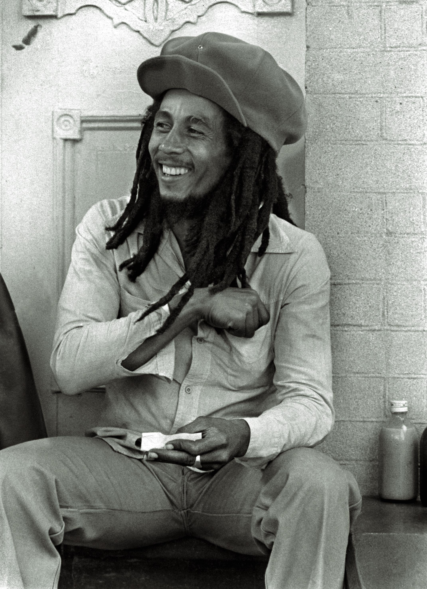

 Nesta Marley OM (6 February 1945 – 11 May 1981) was a Jamaican singer, songwriter, and musician. Considered one of the pioneers of reggae, his musical career was marked by fusing elements of reggae, ska, and rocksteady, as well as his distinctive vocal and songwriting style.[2][3] Marley's contributions to music increased the visibility of Jamaican music worldwide, and made him a global figure in popular culture for over a decade.[4][5] Over the course of his career, Marley became known as a Rastafari icon, and he infused his music with a sense of spirituality.[6] He is also considered a global symbol of Jamaican music and culture and identity, and was controversial in his outspoken support for democratic social reforms. He passed away at Cedars Medical Center (now known as the University of Miami Hospital) at the age of 36 of a rare form of melanoma cancer 5 years after surviving a 2 bullet assassination attempt in his home.[7] He also supported legalization of marijuana, and advocated for Pan-Africanism.[8]
Born in Nine Mile, British Jamaica, Marley began his professional musical career in 1963, after forming Bob Marley and the Wailers. The group released its debut studio album The Wailing Wailers in 1965, which contained the single "One Love/People Get Ready"; the song was popular worldwide, and established the group as a rising figure in reggae.[9] The Wailers subsequently released eleven further studio albums; while initially employing louder instrumentation and singing, the group began engaging in rhythmic-based song construction in the late 1960s and early 1970s, which coincided with the singer's conversion to Rastafari. During this period Marley relocated to London, and the group embodied their musical shift with the release of the album The Best of The Wailers (1971).[10]
The group attained international success after the release of the albums Catch a Fire and Burnin' (both 1973), and forged a reputation as touring artists. Following the disbandment of the Wailers a year later, Marley went on to release his solo material under the band's name.[11] His debut studio album Natty Dread (1974) received positive reception, as did its follow-up Rastaman Vibration (1976). A few months after the album's release Marley survived an assassination attempt at his home in Jamaica, which prompted him to permanently relocate to London. During his time in London he recorded the album Exodus (1977); it incorporated elements of blues, soul, and British rock and enjoyed widespread commercial and critical success. In 1977, Marley was diagnosed with acral lentiginous melanoma; he died as a result of the illness in 1981. His fans around the world expressed their grief, and he received a state funeral in Jamaica. The greatest hits album Legend was released in 1984, and became the best-selling reggae album of all time.[12] Marley also ranks as one of the best-selling music artists of all time, with estimated sales of more than 75 million records worldwide.[13] He was posthumously honored by Jamaica soon after his death with a designated Order of Merit by his nation. In 1994, he was inducted into the Rock and Roll Hall of Fame. Rolling Stone ranked him No. 11 on its list of the 100 Greatest Artists of All Time.[14]